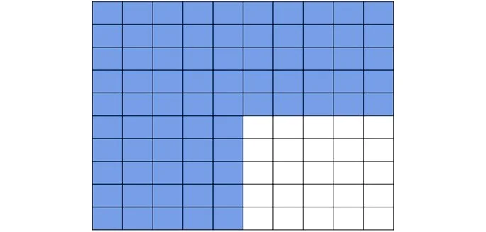
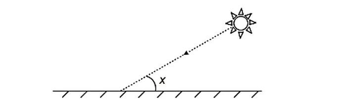
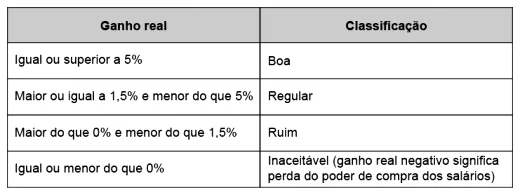

Porcentagem
Questão 1:
Assunto: Porcentagem | Dificuldade: Fácil
25 representa quantos por cento de 200?
Questão 2:
Assunto: Porcentagem | Dificuldade: Fácil
30 representa 15% de qual número?
Questão 3:
Assunto: Porcentagem | Dificuldade: Fácil
Em uma sala de aula há 30 alunos, dos quais 40% são meninas. Quantas meninas têm na sala?
Questão 4:
Assunto: Porcentagem | Dificuldade: Fácil
Convertendo a fração 2 sobre 5 em uma fração centesimal, qual o resultado em porcentagem?
Questão 5:
Assunto: Porcentagem | Dificuldade: Média
Para as frações irredutíveis abaixo, determine as porcentagens correspondentes.
a) 1/5
b) 4/5
c) 9/20
Questão 6:
Assunto: Porcentagem | Dificuldade: Média
Na promoção de uma loja de eletrodomésticos, um aparelho de som que custava R$ 400,00 teve um desconto de 12%. Quanto o cliente que decidir comprar o equipamento pagará?
Questão 7:
Assunto: Porcentagem | Dificuldade: Média
Observe a figura abaixo e responda: a fração do desenho que não está pintada corresponde a que porcentagem?
Questão 8:
Assunto: Porcentagem| Dificuldade: Média
Segundo dados apurados no Censo 2010, para uma população de 101,8 milhões de brasileiros com 10 anos ou mais de idade e que teve algum tipo de rendimento em 2010, a renda média mensal apurada foi de R$1202,00. A soma dos rendimentos mensais dos 10% mais pobres correspondeu a apenas 1,1% do total de rendimentos dessa população considerada, enquanto que a soma dos rendimentos mensais dos 10% mais ricos correspondeu a 44,5% desse total.
Qual foi a diferença, em reais, entre a renda média mensal de um brasileiro que estava na faixa dos 10% mais ricos e de um brasileiro que estava na faixa dos 10% mais pobres?
Questão 9:
Assunto: Porcentagem | Dificuldade: Fácil
Raios de luz solar estão atingindo a superfície de um lago formando um ângulo x com a sua superfície, conforme indica a figura.
Quando x = 30º, a intensidade luminosa se reduz a qual percentual de seu valor máximo?
Questão 10:
Assunto: Porcentagem | Dificuldade: Média
O ganho real de um salário, r, é a taxa de crescimento do poder de compra desse salário. Ele é calculado a partir do percentual de aumento dos salários e da taxa de inflação, referidos a um mesmo período. Algebricamente, pode-se calcular o ganho real pela fórmula

em que i é o percentual de aumento no valor dos salários e f é a taxa de inflação, ambos referidos a um mesmo período.
Considere que uma categoria de trabalhadores recebeu uma proposta de aumento salarial de 10%, e que a taxa de inflação do período correspondente tenha sido 5%. Para avaliar a proposta, os trabalhadores criaram uma classificação em função dos ganhos reais conforme o quadro.
Eles classificaram a proposta de aumento e justificaram essa classificação apresentando o valor do ganho real que obteriam. A classificação, com sua respectiva justificativa, foi